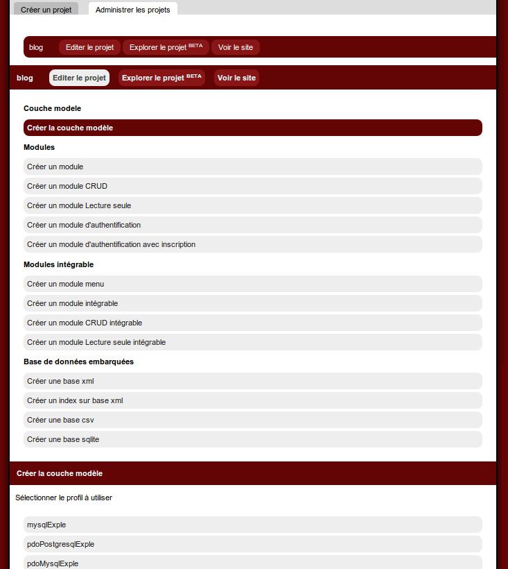
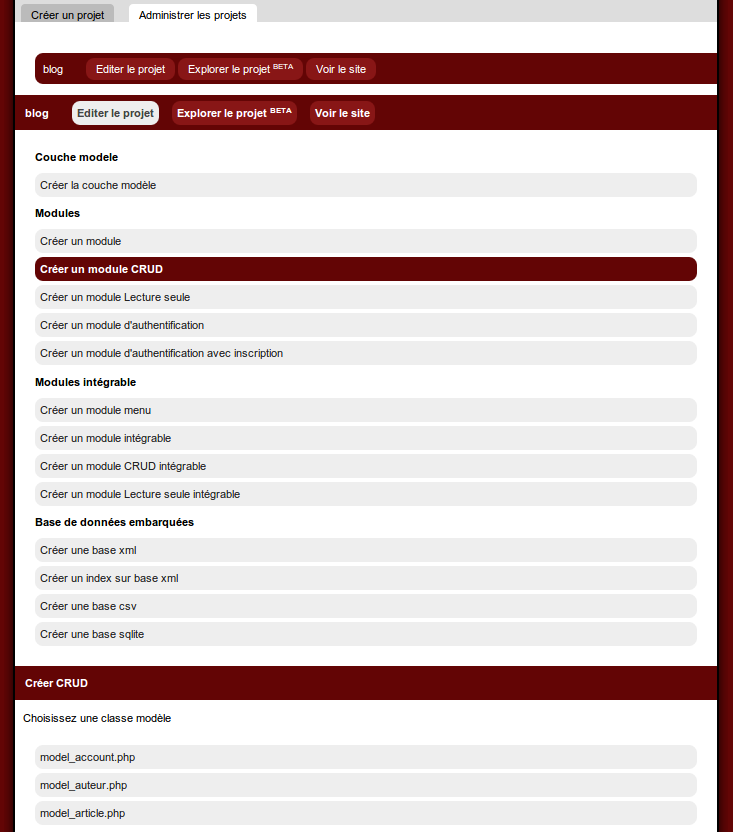
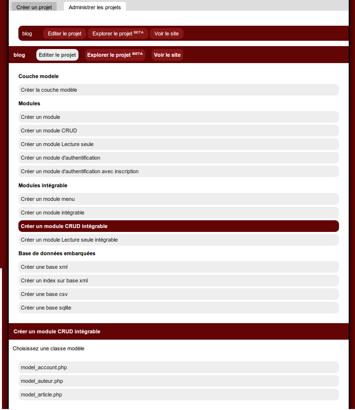

The web code generator: the builder
Introduction
The mkbuilder is the mirror of the terminal line for the other frameworks.It was made for the person who dislike terminal line
This application, you download the framework's archive, you unpress in a web directory
You open your browser on the url of the framework, for example http://localhost/mkframework_vX.X
Here you are, you watch the builder who provide you tools to start and manage your projects easily.
You can
- create an empty application (normal or bootstrap)
- manage your connection
- generate the model abstract layer
- generate a CRUD for a table (entire, read-only, multi line)
- generate a CRUD with Guriddo for a table
- add an auth module with/without registration form
- add a rigts manager mono/multi groups
- generate a menu module
- create a form assists by the builder
- create a new module
- create a new embedded module
- create a database xml/csv/json/sqlite/mongodb
Market
Keep you builder extensions uptodateYou should soon add/porpose new extensions

Create a new website

You fill the field with the website name to create

List existing projects
Clic on the right tab to list existing projectsManage your project
A menu list actions you can do
Generate the abstract model layer
After you configure your connection file, generate the model layer class
Generate a CRUD module (Create Read Update Delete)
Choose the table you want to generate the CRUD module on

Clic on the table, it list fields, type and if it is a primary key

Generate a CRUD embedded module (Create Read Update Delete)
Choose the table you want to generate the CRUD module on

Clic on the table, it list fields, type and if it is a primary key

Create a module


Explore your projects
Vidéo présentant l'explorateur de projet: sur youTube